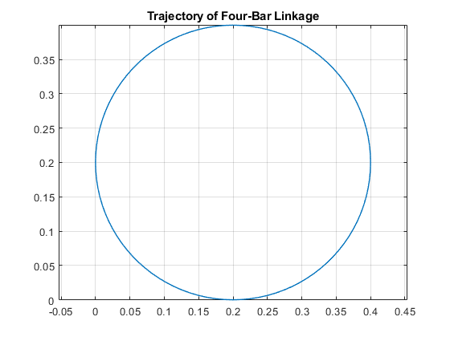
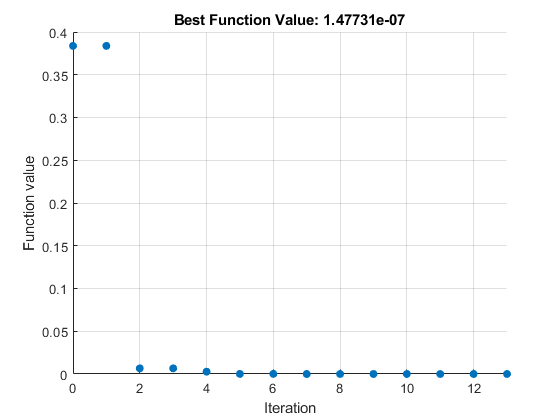

Four-Bar Linkage Optimization
This example shows a four-bar linkage modeled in Simscape Multibody that is optimized using MATLAB.
Mechanical designers often wish to design a four-bar linkage that will enable an end effector to follow a certain path. The lengths of the links and the position of the end effector influence the trajectory of the end effector in a complex kinematic relationship. Optimization algorithms can be used to tune those lengths to achieve the desired motion.
In this example, a parameter sweep is performed to see which trajectories are possible when varying a subset of the lengths. Then those lengths are tuned using MATLAB optimization algorithms until the resulting trajectory is within tolerances of the desired trajectory.
Contents
Model


Simulation Results from Simscape Logging
The plot below shows the path of a pointer on the end of a four-bar linkage. Varying the lengths of the bars will change the trajectory of this point.
Results from Parameter Sweep
Four-bar linkages can be grouped into various cases based on the lengths of their links. See http://en.wikipedia.org/wiki/File:Linkage_four_bar_fixed.svg The resulting trajectories vary quite widely. We will limit the scope of our problem to a crank-rocker mechanism. This means:
{kind=link}
- Link a (driven link) is the shortest link (a <= min(b,c,d))
- Link b (connecting link) is the longest link (b >= max(a,c,d))
- Link a must be able to rotate 180 degrees (a+b <= c+d)

Results from Optimization
Adhering to the same conditions as in the parameter sweep, optimization algorithms are used to find the lengths of Bar A and Bar B that permit the point on the four-bar linkage to follow the desired trajectory. Note that the trajectories are translated so that the minimum x and y values of the trajectories are 0. This makes visual inspection of the curves slightly easier.
Iter Func-count f(x) MeshSize Method
0 1 0.383738 0.215
1 1 0.383738 0.05375 Refine Mesh
2 2 0.00661577 0.1075 Successful Poll
3 2 0.00661577 0.02687 Refine Mesh
4 5 0.00272638 0.05375 Successful Poll
5 9 0.000112722 0.1075 Successful Poll
6 11 0.000112722 0.02687 Refine Mesh
7 15 2.0582e-05 0.05375 Successful Poll
8 19 2.0582e-05 0.01344 Refine Mesh
9 23 1.67334e-06 0.02687 Successful Poll
10 27 1.67334e-06 0.006719 Refine Mesh
11 31 1.47731e-07 0.01344 Successful Poll
12 35 1.47731e-07 0.003359 Refine Mesh
13 39 1.47731e-07 0.0008398 Refine Mesh
Optimization terminated: mesh size less than options.MeshTolerance.
Elapsed Time = 41.7501
Link Initial Final
_____ __________ __________
{'a'} {'0.1800'} {'0.1195'}
{'b'} {'0.2500'} {'0.2651'}
